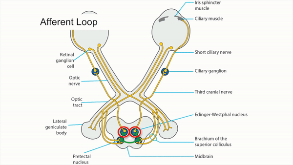

Parasympathetic


- Light shined in eye stimulates retinal photoreceptors and intrinsically photosensitive retinal ganglion cells
- Signal travels in retinal ganglion cell axons through the optic nerves, optic chiasm, and both optic tracts
- Signal branches off in brachium of the superior colliculus to synapse in dorsal midbrain pretectal nuclei on both sides
- Axons leave pretectal nuclei and cross to nuclei on other side of dorsal midbrain so that afferent signal is distributed equally to both Edinger-Westphal nuclei
- “Pre-ganglionic” axons from Edinger-Westphal parasympathetic nuclei carry signals in both third cranial nerves to ciliary ganglia in both orbits
- “Post-ganglionic” axons leaving ciliary ganglia in short ciliary nerves carry signals to both iris sphincters for pupil constriction and to both ciliary bodies for accommodation



-
Lesion of one optic nerve
- Produces afferent pupil defect Afferent Pupil Defect
- Reduces ipsilateral pupil constriction to light but preserves constriction to target placed within reading distance because awareness of near target stimulates cerebral pathway that bypasses dorsal midbrain and connects directly to Edinger-Westphal nuclei (“afferent light-near dissociation”)
-
Lesion of both optic nerves
- Reduces pupil constriction in both eyes to light stimuli
-
Trap: an afferent pupil defect will not occur when there is equal damage to both optic nerves
- Preserves pupil constriction to near target (“afferent light-near dissociation”) Afferent Light Near Dissociation
-
Lesion of one optic tract
- Produces contralateral afferent pupil defect (because optic chiasm crossing axons outnumber non-crossing axons)
- Produces contralateral homonymous hemianopia
-
Lesion of one brachium of superior colliculus
- Produces contralateral afferent pupil defect
-
Trap: does not cause visual field defect (because does not interrupt visual pathway)
-
Lesion of dorsal midbrain
- Produces large pupils and impairs pupil constriction to light in both eyes (“tectal pupils”)
- Spares pupil constriction to a visual target placed near the eye (because cerebral signals reach the Edinger Westphal nuclei through a more ventral pathway) (“tectal light-near dissociation”) Video Missing Tectal Pupils
-
Lesion of third nerve
-
Produces
- Mydriasis and impairment of pupil constriction to light
- Ptosis
- Ocular ductional deficits
-
Trap: third nerve lesions never produce mydriasis as isolated clinical abnormality
-
Produces
-
Lesion of ciliary ganglion or post-ganglionic ciliary nerves
-
Produces
- Mydriasis
- Poor pupil constriction to light and slow segmental constriction to target placed near the eye (tonic light-near dissociation)
- Slow redilatation of pupil after prolonged viewing of near target
- Pupil constriction following instillation of dilute pilocarpine eyedrops
-
Tip: tonic features are diagnostic of postganglionic lesion and preclude the need to investigate for third nerve palsy or other intracranial process
-
Produces